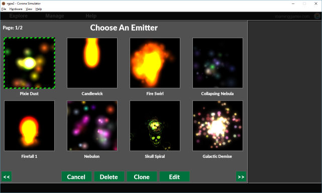

Roaming Gamer Particle Editor 2

This tool requires to run: Get It Now!
License

This program is free software: you can redistribute it and/or modify it under the terms of the GNU General Public License as published by the Free Software Foundation, either version 3 of the License, or (at your option) any later version.
This program is distributed in the hope that it will be useful,
but WITHOUT ANY WARRANTY; without even the implied warranty of
MERCHANTABILITY or FITNESS FOR A PARTICULAR PURPOSE. See the
GNU General Public License for more details.
You should have received a copy of the GNU General Public License
along with this program. If not, see <http://www.gnu.org/licenses/>.
This product requires a licensed copy of SSK2 Pro to run.
While you may distribute the RGPE2 code, be aware YOU MUST NOT distribute SSK2 along with it.
What Is It?
Roaming Gamer Particle Editor 2 (aka RGPE2) is a FREE particle editor for creating emitter definition files for use with the Corona SDK newEmitter() function.
(While the tool is free, it does require SSK Pro to run.)
Where Can I Get It?
I keep the latest version of this tool on my RG_FreeStuff Git under ~/SSK2/tools/
I suggest getting the entire repository, but if you only want this tool you can download it here:
Quick Start
I will revisit these docs later to add more details, but for now I am supplying a quick-start guide to get you going.
Before You Start
Before you can use the tool you must follow these steps:
- Download the source.
- Unzip it (if you got the zip file) and put the
rgpe2/folder somewhere on your machine. - Copy the
ssk2folder from your paid copy of SSK2 into rgpe2. When you are done, the folder should contain these files and folders:rgpe2/data/images/presets/scripts/ssk2/build.settingsconfig.luamain.lua- ... and a few other files.
- Now, you can open the tool in your Corona SDK simulator.
This tool is designed to run in the simulator and runs best in a:
720 x 1280 Custom Device
The Interface - Part 1 (Creating)
Initial View
When you first start the tool you will be presented with a screen like this:
- Menu Bar - At top of screen with these options:
- Explore
- Output - Opens the output folder:
<desktop>/RPGE2_out/- Warning: Won't exist till you generate first emitter definition
- DB Files - Opens the 'documents' directory where all your definitions are stored for future editing.
- Tip: If you ever want to quickly clean up your library of particle definitions you can simply delete the files in this folder and restart the tool/simulator. However, this will remove them permanently.
- Output - Opens the output folder:
- Manage -
- Emitter Library - Open emitter library browser so you can see what you have and delete individual emitters.
- Warning: Do not delete all of the emitter definitions. That may crash the tool. :\
- Import/Export Library - These are placeholder features.
- I will add these if time permits and/or I get enough requests for them.
- Click them to see what they should do.
- Emitter Library - Open emitter library browser so you can see what you have and delete individual emitters.
- Help - Takes you to these docs.
- roaminggame.com - Takes you to my website.
- Explore
- Green
+Button - Click this to add a new emitter or image to the edit pane. When you click the button a dialog like this will pop up:
Adding Image Layers
Try clicking the Green + Button, then select Image Layer button. You should see this:
From here, you can:
- Navigate with
<<and>>buttons. Canceland not add an image layer.- Click an image chip and click
OKto create a new image layer. - Double-click a chip to create a new image layer with the chip.
- Press
escapeto exit without creating a image layer.
The purpose of 'image layers' is to let you preview/edit an emitter with a test image(s) in the background and/or foreground.
When I revisit these tool, I will add a section showing you how to add your own test images to the tool library. For now you will have to dig in the code.
~ The Roaming Gamer
Please choose Black & White Grid if you are following along.
Adding Existing Emitters
Try clicking the Green + Button, then select Load Emitter button. You should see this:

From here, you can:
- Navigate with
<<and>>buttons. Canceland not add an emitter layer.- Click an emitter chip and click
Editto create a new emitter layer. - Double-click a chip to create a new emitter layer with the chip.
- Click an emitter chip and click
Cloneto make a new copy of the definition and then create a emitter layer with it. - Click an emitter chip and click
Deleteto delete the definition of then selected chip. This redraws the emitter browser. - Press
escapeto exit without creating a image layer.
The purpose of 'emitter layers' is to let you preview/edit an emitter definition(s) before generating.
You can add multiple emitters to the main pane of the tool in order to see: a. How then look side-by-side, and b. How they interact with each other.
~ The Roaming Gamer
Please choose Nebulon if you are following along.
Adding New Emitter
Try clicking the Green + Button, the select New Emitter button.
This will create a 'default' emitter immediately, and you should see this:
The Interface - Part 2 (Editing)
If you have been reading these docs in order and experimenting as I suggest, you should now have somethink like this:
Hiding & Showing Layers
The first thing you will notice is, that it is quite hard to see the emitters. Let's fix that.
Please click the little green
eyeicon on the 'Black & White Grid Layer' (left side of screen). This will hide the layer. Clicking it again will show the layer.
Now you will have this:
Selecting and Dragging
If you look at the main pane (center) you will see two particle emitters, one on top of the other.
You should also see a faint outline of a square. Click this square and drag it to the left. These square are handles that let you drag the emitters around the main pane while editing them. Clicking a handle also selects the emitter for editting and you will notice the right pane updates to reflect this.
You should have something like this now:
Selecting and Re-ordering Layers
If you look to the left side of the screen, you will notice there are four 'buttons/bars':
- Black & White Grid - The image layer we added.
- Nebulon - The existing emitter we added from our library.
- Emitter - The generic emitter we added.
- Green
+Button - The 'add' button.
You can single click any of the buttons (except add) to select that object/layer. This will be reflected in the right (edit) pane.
You can click any of these buttons (except add) button and drag them to change the layering order. (Drag nebulon to layer so it is rendered last. Last is list renderes last.)
You can also double click the emitter buttons to rename the emitters. (Try double clicking Emitter and renaming it to "Boom".)
WARNING Renaming an emitter changes the name of the definition in your library too.
You should have something like this now:
Context Sensitive Editing
The right pane of the tool is, as you will have guessed by now, an editor pane for modifying attributes of the selected image/emitter.
WARNING: Be aware, when you edit a particle you are changing the definition in the library too.
So, if you have an emitter you like, and you want to tweak it while keeping the original:
Clone the original, rename the cloned copy, then edit it.
~ The Roaming Gamer
Note: I won't go through every option supported by the emitter editor. You will need to explore this on your own.
For now, please just:
- Select the 'Nebulon' emitter.
- Click the
1button if it is not selected. - Change
Emitter TypetoGravity.
Now you should have this:
The Interface - Part 3 (Generating)
This tool allows you to generate emitter definitions files that are suitable for creating emitter objects with the Corona SDK newEmitter() function.
It also lets you generate test projects that are ready to run with SSK2.
To generate either one, simply click, the little 'arrow in a circle' icon on a emitter button (in left pane).
This will pop up a dialog like this:
Here you can choose a name for the generated emitter file and/or project. Then click Emitter to generate an emitter file with its image, or click Project to generate the emitter and a test project to run it in (requires SSK2 to run).
Now, you can fine the generated content by clicking: Explore &rarrow; Output. This will open the folder where you out emitters/projects are generated.
More Docs To Come
That is all for now. I will update these docs some more later, but this should be enought to get you started. If you need help or run into problems, just follow the Getting Help instructions below.
Known Issues
I will list issues I know about here:
- Can't select alternate particle - Sorry. This was an oversight on my part. The tool comes with a ton of particles to use, but you can ONLY create new emitters with the default particle. I will fix this in future updates. Till then, just make your emitters with the default particle and substitute your own image when you use it.
Getting Help
I will be providing help (exclusively) through the Corona SDK Forums. (Sorry: Direct e-mails and private messsages will not be answered.)
When posting a question in the forums, be sure to follow these guidelines:
- Post to this forum: https://forums.coronalabs.com/forum/553-other-third-party-tools/
- Make sure the title starts with: RPGE2 and includes a short and meaninful name for the the problem.
- Example Title:
RPGE2: Editor Crashed
- Example Title:
- In the body of the post tell me all of the following:
- Versions / Environment / Target
- Version of SSK you are using.
- Version of Corona SDK you are using.
- OS you are developing under.
- Error Message(s) (If Any)
- Error messages (put them in a code block for legibility)
- Summary Of Problem
- What you are trying to do.
- What you expected to see.
- What you saw instead.
- Why you think this is wrong (if there is no explicit error message.)
- Help Thyself
- Tell me what debugging steps you have tried.
- Versions / Environment / Target
Be clear, concise and precise.
The more effort you put into your post, the better I will be able to help you.~ The Roaming Gamer
 Copyright © Roaming Gamer, LLC. 2008-2016; All Rights Reserved
Copyright © Roaming Gamer, LLC. 2008-2016; All Rights Reserved